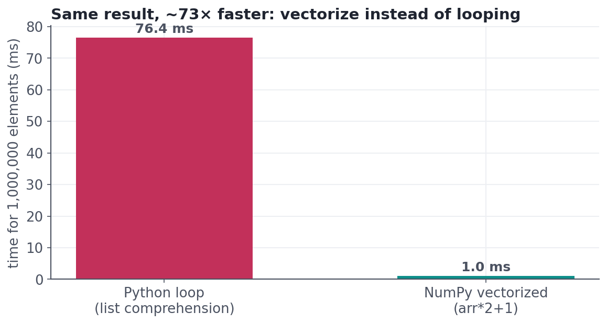
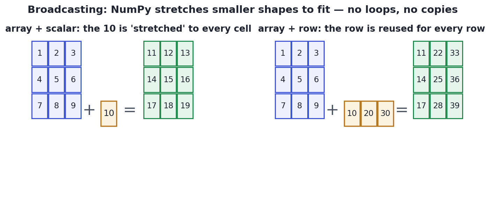
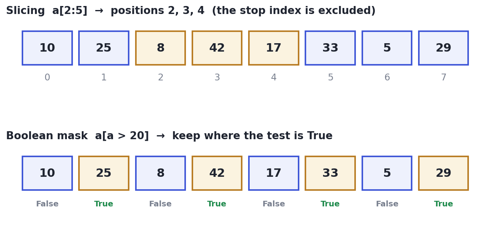

NumPy: Thinking in Arrays
Vectorized thinking — operate on whole arrays at once — that makes data code fast and short.
There's a mental shift that separates slow, clunky data code from fast, elegant code: stop thinking about one number at a time and start thinking about whole arrays at once. NumPy is the library that makes this possible, and it's the engine beneath Pandas, scikit-learn, and nearly every numerical tool in Python. Learn to think in arrays and your code gets shorter, clearer, and — as you'll see — dozens of times faster.
Concept · the big ideaThe array and vectorization
A NumPy array (ndarray) is a grid of numbers, all the same type, stored compactly. Its superpower is vectorization: you write one operation on the whole array and NumPy applies it to every element in fast, compiled code. No for loop, no bookkeeping — prices * 0.9 discounts an entire array at once.
This isn't just prettier; it's dramatically faster, because the loop happens in optimized C instead of interpreted Python:

arr*2+1 finishes in a blink. The gap only widens with bigger data.Concept · shapes that fitBroadcasting
What happens when shapes don't match — an array plus a single number, or a matrix plus a row? NumPy uses broadcasting: it automatically 'stretches' the smaller shape to fit the larger one, without actually copying data. It's how you add a scalar to every cell, or subtract a per-column average from a whole table, in one line.

Concept · selecting dataIndexing, slicing, and boolean masks
You select parts of an array three ways: by position (a[0], a[2:5]), and — the one that changes everything — by a boolean mask. Writing a > 20 produces an array of True/False, and a[a > 20] keeps only the elements where it's True. That single idea is filtering, and it carries straight into Pandas as the way you select rows.

Worked exampleArray thinking in code
Watch a few lines replace the whole pure-Python block from last lesson — discount every order, filter the big ones with a mask, and aggregate, all without a single loop.
import numpy as np
amounts = np.array([180., 45., 220., 30., 95., 60.])
# Vectorized: 10% off every order at once — no loop.
discounted = amounts * 0.9
print("discounted:", np.round(discounted, 1))
# Boolean mask: keep only orders over $100.
big = amounts[amounts > 100]
print("orders over $100:", big, "| count:", big.size)
# Aggregations run over the whole array.
print(f"total ${amounts.sum():.0f} | mean ${amounts.mean():.1f} | max ${amounts.max():.0f}")discounted: [162. 40.5 198. 27. 85.5 54. ] orders over $100: [180. 220.] | count: 2 total $630 | mean $105.0 | max $220
Every line operates on the array as a whole: no indices, no loops, no off-by-one risk. This array-first mindset is exactly what Pandas builds on — a DataFrame column is a NumPy array with a label, so everything here transfers directly to the next lesson.
Interactive labYour turn — think in arrays
arr is a NumPy array of 10 numbers. Using a boolean mask (no loop), assign to answer the average of only the values greater than 50, rounded to 2 decimals.
arr → a 10-element NumPy array, already loaded.arr[arr > 50] keeps the big values; take .mean(), wrap in round(float(...), 2).answer = round(float(arr[arr > 50].mean()), 2)The mask arr > 50 selects the qualifying elements; .mean() averages just those.
★ Key points to remember
- A NumPy array holds same-type numbers compactly; vectorization applies one operation to every element in fast compiled code.
- Vectorized code is far faster than Python loops (often 10–100×) and shorter.
- Broadcasting stretches smaller shapes (a scalar, a row) to fit larger ones — no loops, no copies.
- A boolean mask (
a[a > 20]) keeps elements that pass a test — this is filtering, and it carries into Pandas. - Aggregations (
.sum(),.mean(),.max()) run over the whole array (or along anaxis).
a = np.array([5, 12, 3, 20, 8]), what does a[a >= 10] return?arr * 2 (NumPy) typically far faster than [x*2 for x in arr] (Python list) for a large array?arr * 2 only works on small arraysM (rows = customers, columns = months) and a 1D array avg of length = number of columns. What does M - avg do?◆ Practice▸
prices; (b) count how many values in scores are below 50.Show solution & reasoning
(a) prices * 1.05 — broadcasting multiplies every price at once. (b) (scores < 50).sum() — the comparison makes a boolean array (True=1, False=0), and summing it counts the Trues. Both avoid explicit loops.
arr[arr > arr.mean()] returns, step by step.Show solution & reasoning
Step 1: arr.mean() computes the average of the array. Step 2: arr > arr.mean() produces a boolean mask that's True wherever an element exceeds the average. Step 3: arr[...] applies that mask, returning only the above-average elements. It's a one-line 'keep the values bigger than the mean.'
◎ Deep dive: why arrays are fast, the axis argument, and views vs. copies▸
Why vectorization is fast. A Python list can hold mixed types, so each element is a full Python object scattered in memory, and a loop pays interpreter overhead on every step. A NumPy array stores raw numbers of one type in a single contiguous block, so operations run as a tight compiled loop over cache-friendly memory — often 10–100× faster, and the foundation of all high-performance numerical Python.
The axis argument. On a 2D array, aggregations take a direction: M.sum(axis=0) sums down the columns (one total per column), M.sum(axis=1) sums across the rows (one total per row), and no axis sums everything. The mnemonic: axis names the dimension that disappears. This same axis idea reappears throughout Pandas.
Views vs. copies. Slicing an array usually returns a view — a window onto the same memory — so modifying the slice changes the original. Boolean-mask indexing returns a copy. When you need to be sure you're not mutating the source, call .copy() explicitly. This is the array-level version of the reference trap from the Python lesson.
Expect "why use NumPy over plain Python lists?" — answer with vectorization (whole-array operations in compiled code), speed, and broadcasting, plus that it's the foundation under Pandas and ML libraries. Being able to filter with a boolean mask and explain axis=0 vs axis=1 quickly marks you as comfortable with real data code.